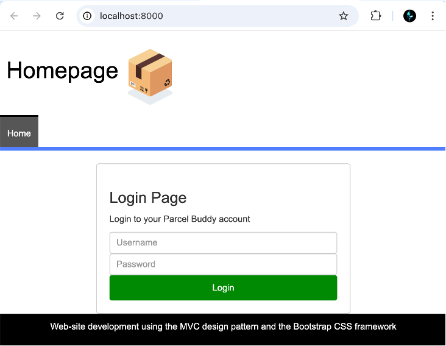

Parcel Buddy is a web-based parcel delivery management system built using the Model–View–Controller (MVC) pattern. It allows managers to assign parcels to drivers and delivery staff to update parcel status, view routes, and interact with real-time maps.
(Login page preview – placeholder image)
Tech Stack
PHP (OOP, MVC)
MySQL
PDO
JavaScript (AJAX)
Leaflet.js
HTML/CSS
Bootstrap
Key Features
- Secure login system with role-based navigation (Manager / Deliverer).
- CRUD operations with PHP Data Objects (PDO) and prepared statements.
- Live search with AJAX and server-side filtering.
- Leaflet.js map integration displaying live delivery locations.
- QR code generation for parcel identification and scanning workflow.
Highlighted Code Samples
Database Singleton Connection (Database.php)
class Database {
protected static $_dbInstance = null;
protected $_dbHandle;
public static function getInstance() {
$username ='example';
$password = 'example';
$host = 'example.host';
$dbName = 'exampledb';
if(self::$_dbInstance === null) {
self::$_dbInstance = new self($username, $password, $host, $dbName);
}
return self::$_dbInstance;
}
private function __construct($username, $password, $host, $database) {
try {
$this->_dbHandle = new PDO("mysql:host=$host;dbname=$database",
$username, $password);
} catch (PDOException $e) {
echo $e->getMessage();
}
}
public function getdbConnection() {
return $this->_dbHandle;
}
}Fetching + Filtering Data Securely (DeliveryPointDataSet.php)
public function searchDeliveryPointsByField($searchField, $searchValue) {
$validFields = ['name', 'postcode', 'address_1', 'id'];
if (!in_array($searchField, $validFields)) {
throw new InvalidArgumentException('Invalid search field.');
}
$sql = "SELECT * FROM delivery_point WHERE $searchField LIKE :searchValue";
$stmt = $this->_dbHandle->prepare($sql);
$stmt->bindValue(':searchValue', '%' . $searchValue . '%', PDO::PARAM_STR);
$stmt->execute();
$dataSet = [];
while ($row = $stmt->fetch(PDO::FETCH_ASSOC)) {
$dataSet[] = new DeliveryPointData($row);
}
return $dataSet;
}Login Controller with Role-Based Redirection (logincontroller.php)
if (isset($_POST["loginbutton"])) {
$db = Database::getInstance();
$username = $_POST["username"];
$password = $_POST["password"];
$sqlQuery = 'SELECT usertype, userid FROM delivery_users
WHERE username=:username AND password=:password';
$stmt = $db->getdbConnection()->prepare($sqlQuery);
$stmt->bindParam(':username', $username);
$stmt->bindParam(':password', $password);
$stmt->execute();
$result = $stmt->fetch(PDO::FETCH_ASSOC);
if ($result) {
$_SESSION["login"] = $username;
$_SESSION["userid"] = $result['userid'];
if ($result['usertype'] === 'Manager') {
header('Location: managerPage.php');
} elseif ($result['usertype'] === 'Deliverer') {
header('Location: userPage.php');
}
} else {
echo "Invalid login credentials.";
}
}Interactive Map Using Leaflet.js (userPage.phtml)
var map = L.map('map').setView([53.4576, -2.2426], 10);
L.tileLayer('https://{s}.tile.openstreetmap.org/{z}/{x}/{y}.png', {
attribution: '© OpenStreetMap contributors'
}).addTo(map);
L.marker([getLat(); ?>, getLng(); ?>])
.addTo(map)
.bindPopup(`getName(); ?>
Status: getStatus(); ?>`);